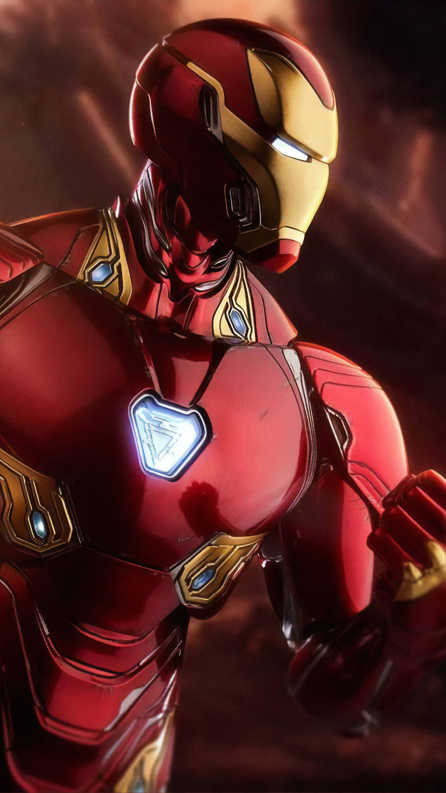
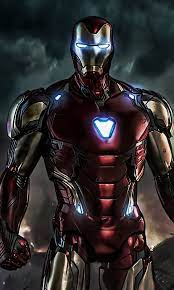
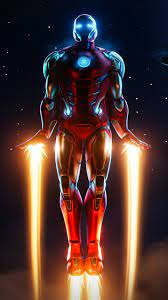

Iron Man: el hombre de hierro ⭐⭐⭐⭐⭐
GÉNERO: acción, ciencia ficción, aventuras y cine de superhéroes.
Tony Stark (Robert Downey Jr.) se dedica a vender armas y lo tiene todo: dinero, poder, mujeres... Durante una demostración en Afganistán, un poderoso traficante lo captura. Gravemente herido (un fragmento de metralla está junto a su corazón), Stark se construye una armadura que le mantiene con vida y gracias a la cual escapa. Ya en USA, jura usar su nuevo traje para salvar a la gente.
MÁS INFORMACIÓN


